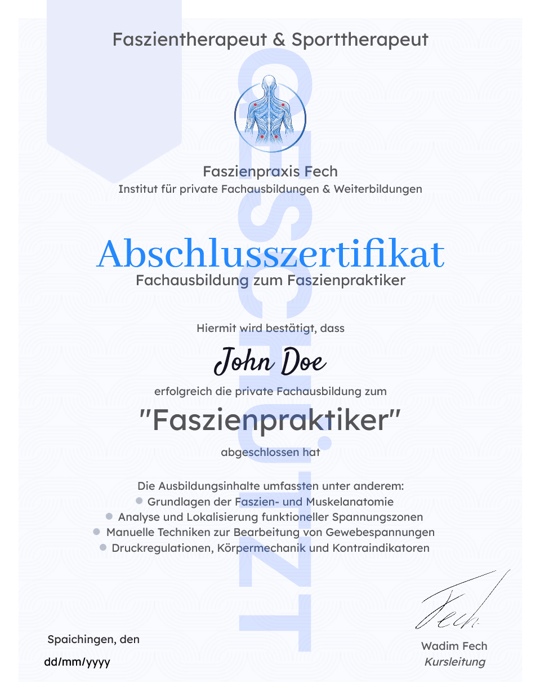

Private Fachausbildung als Faszien-Praktiker ( Online )
Werde zu einer wertvollen Unterstützung
für andere Menschen.
Die Online-Fachausbildung für ganzheitliche Faszien- & Muskelarbeit — ortsunabhängig, praxisorientiert und individuell anpassbar an deinen Alltag.

- Digitale Lernunterlagen mit Theorie & Praxis
- Schritt-für-Schritt-Struktur — von Grundlagen bis Spezialisierung
- Offizielles Abschlusszertifikat
- Abrufbar jederzeit & auf allen Geräten
Online-Fachausbildung
Lerne maximal flexibel
in deiner Fachausbildung
Die Ausbildung ermöglicht es dir, deinen Lernplan individuell an deinen Alltag und dein persönliches Lerntempo anzupassen. Keine festen Präsenzzeiten — du bestimmst, wann und wo du lernst.
Du erhältst ausführliche digitale Lernunterlagen sowie praxisorientierte Inhalte, die du Schritt für Schritt durcharbeiten kannst.
Alles, was du benötigst, ist ein Internetzugang. So integrierst du deine Weiterbildung flexibel neben Beruf und Familie.
Strukturiertes Lernen.
Flexibel & digital.
- Ausführliche digitale Lernunterlagen mit Theorie & Praxis
- Schritt-für-Schritt-Aufbau vom Grundwissen zur Spezialisierung
- Anatomische Grundlagen bis zu modernen Anwendungskonzepten
- Abrufbar zu jeder Zeit — auf allen Geräten
- Kein Präsenzunterricht erforderlich
Deine Kompetenz
Positioniere dich als
zertifizierter Faszienpraktiker
Mit dem Abschluss erwirbst du fundiertes, praxisorientiertes Fachwissen — und hebst dich klar von klassischen Wellness-Angeboten ab.
Fachliche Kompetenz
Du lernst, funktionelle Zusammenhänge zu erkennen, muskuläre Spannungsmuster einzuordnen und gezielte Anwendungen strukturiert umzusetzen — auf professionellem Niveau.
Klare Ausrichtung
Diese Zusatzqualifikation ermöglicht es dir, dein Leistungsportfolio professionell zu erweitern und dich als qualifizierter Ansprechpartner im präventiven Bereich zu positionieren.
Marktdifferenzierung
Du stärkst deine fachliche Kompetenz und differenzierst dich klar von klassischen Wellness-Angeboten — mit spezialisierter Zusatzkompetenz und praxisnaher Umsetzung.
Nach der Ausbildung
Fachausbildung zum zertifizierten
Faszienpraktiker
- Ganzheitliche Faszien- & Gewebearbeit
Mit dem erfolgreichen Abschluss erhältst du dein offizielles Abschlusszertifikat als Nachweis deiner Spezialisierung in ganzheitlicher Faszien- & Muskelarbeit.
Du verfügst über fundiertes Fachwissen, praxisorientierte Kompetenz und ein klares methodisches Verständnis funktioneller Zusammenhänge im Bewegungsapparat. Damit positionierst du dich deutlich über dem klassischen Wellness-Niveau.
Diese Qualifikation eröffnet dir neue berufliche Möglichkeiten — im Fitness- und Gesundheitsbereich, im Personal Training oder in deiner eigenen selbstständigen Tätigkeit.
Faszienpraktiker - Ganzheitliche Faszien- & Gewebearbeit
- Offiziell anerkanntes Abschlusszertifikat
- Zeitlich unbegrenzt gültig
- Stärkung deiner Marktposition durch spezialisierte Zusatzkompetenz
- Positionierung über dem klassischen Wellness-Niveau
- Berufseinstieg im Fitness-, Gesundheits- oder Präventionsbereich
- Geeignet für selbstständige Tätigkeit und Personal Training
Anatomische Grundlagen
Strukturelles Verständnis des Faszien- und Muskelsystems sowie grundlegende funktionelle Zusammenhänge im Bewegungsapparat.
Analyse & Diagnose
Spannungsbilder systematisch analysieren, muskuläre Dysbalancen erkennen und funktionelle Muster einordnen.
Anwendungskonzepte
Professionelle Anwendungskonzepte im präventiven Bereich strukturiert entwickeln und gezielt einsetzen.
Moderne Faszienarbeit
Aktuelle Konzepte ganzheitlicher Faszien- & Muskelarbeit mit direkter Praxisanbindung und Spezialisierung.
Fachliche Tiefe
Vertiefe deine Expertise in moderner Faszien- & Muskelarbeit
Moderne Lebens- und Arbeitsgewohnheiten führen zunehmend zu funktionellen Spannungsmustern, muskulären Dysbalancen und eingeschränkter Bewegungsqualität. Genau hier setzt diese Fachausbildung an.
Du entwickelst ein fundiertes Verständnis für die strukturellen Zusammenhänge von Faszien, Muskulatur und Bewegungssystem — von anatomischen Grundlagen bis hin zu modernen Anwendungskonzepten.
Im digitalen Lernbereich erarbeitest du dir Schritt für Schritt vertiefte Theorie- und Praxisinhalte, die du direkt in der Praxis anwenden kannst.
Investition
Kurs & Preise
Eine einmalige Investition in deine fachliche Spezialisierung — mit lebenslangem Zugang und offiziellem Abschlusszertifikat.
Verstehe, woher Druck und Spannungen im Körper kommen
inkl. MwSt.
- Vollständige Online-Ausbildung zum Faszienpraktiker
- Ganzheitliche Faszien- & Gewebearbeit
- Ausführliche digitale Lernunterlagen
- Offizielles Abschlusszertifikat
- Zeitlich unbegrenzter Zugang
Beide Ausbildungen — ein kompletter Weg
inkl. MwSt.
- Faszienpraktiker Ausbildung (Wert 600 €)
- Triggerpunkt Praktiker Ausbildung (Wert 490 €)
- Beide offiziellen Abschlusszertifikate
- Kompletter Zugang zu allen Lernmodulen
- Zeitlich unbegrenzter Zugang
Löse gezielt muskuläre Triggerpunkte & Verspannungen
inkl. MwSt.
- Vollständige Online-Ausbildung zum Triggerpunkt-Praktiker
- Gezielte Behandlung muskulärer Triggerpunkte
- Ausführliche digitale Lernunterlagen
- Offizielles Abschlusszertifikat
- Zeitlich unbegrenzter Zugang
Nach der Anmeldung erhältst du dauerhaften Zugang zu allen Lernmaterialien — ohne Ablaufdatum und ohne zusätzliche Kosten.
Nach erfolgreichem Abschluss erhältst du dein Zertifikat als qualifizierter Nachweis deiner Spezialisierung — zeitlich unbegrenzt gültig.
Kein Stundenplan, keine Präsenzpflicht. Du bestimmst wann, wo und wie schnell du die Inhalte durcharbeitest.
Jetzt starten
Bereit für deine
Fachausbildung?
Melde dich jetzt an und starte flexibel in deine Spezialisierung für ganzheitliche Faszien- & Muskelarbeit.